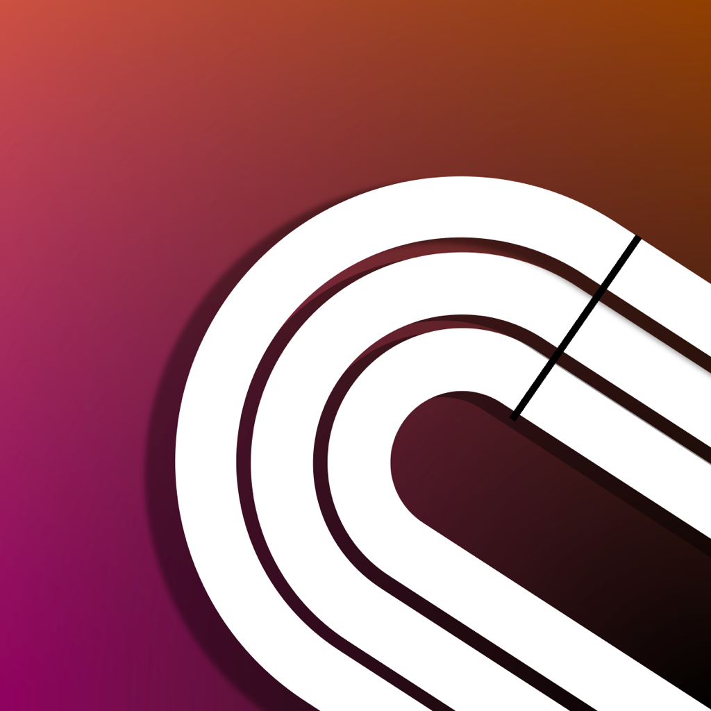
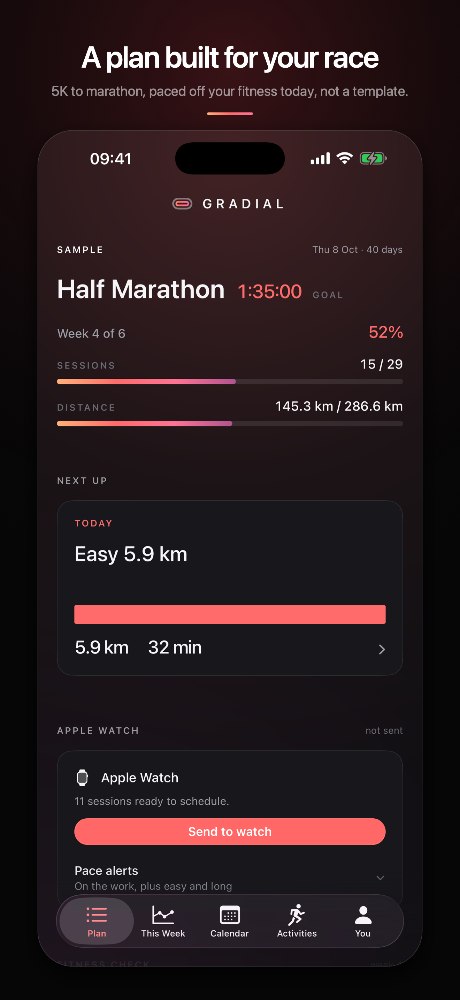
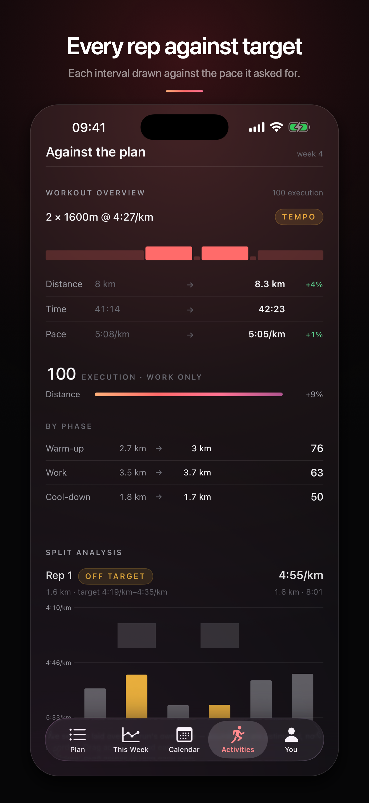
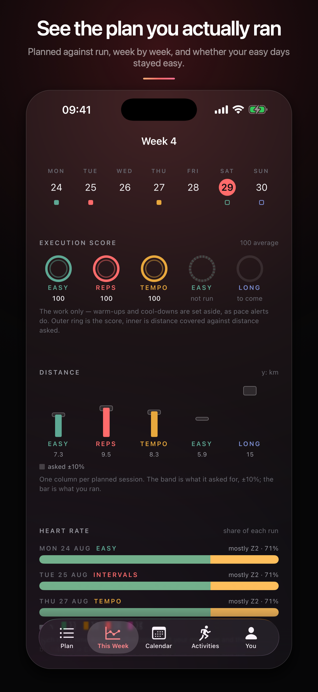
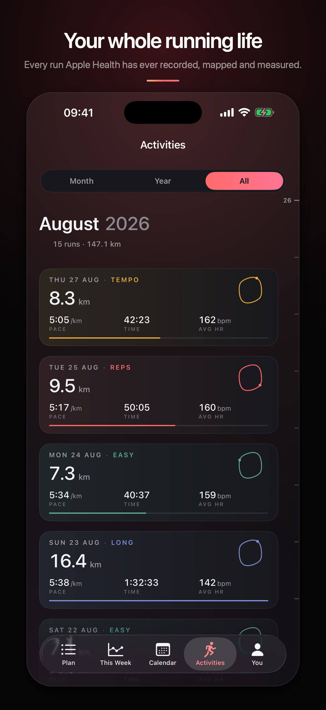
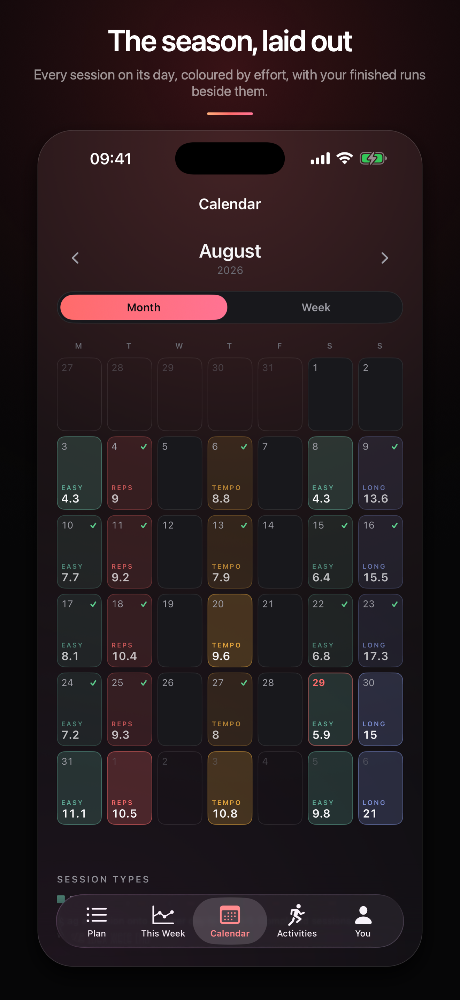

A plan that fits your race
The weeks, the phases and the taper are worked out from your goal and your starting point rather than pulled off a template. Paces come from Jack Daniels' VDOT method and tighten week by week towards goal pace.

GRADIALPick a race and a goal time. Gradial works out the weeks, paces every session off your own fitness, and sends the lot to your Apple Watch. Then it reads your finished runs out of Apple Health and shows you, rep by rep, what actually happened.
Coming to the App Store

How it works
01
5K, 10K, half or marathon, a date, and the time you want. Add a recent race result if you have one and the paces start from what you have actually run.
02
Each session goes across as a structured workout with its steps and pace targets, so you do not have to remember the session mid-run.
03
Finished runs are read from Apple Health, matched to the session they satisfied, and measured against the pace that session asked for.
What it does
The weeks, the phases and the taper are worked out from your goal and your starting point rather than pulled off a template. Paces come from Jack Daniels' VDOT method and tighten week by week towards goal pace.
A bar per interval with the target band drawn behind it, the planned distance and pace next to what you ran, and each rep marked on or off target. A session you executed and a session you survived do not look the same.

Execution scores per session, distance against what was asked for give or take ten per cent, and where your heart rate went. It is the fastest way to see whether your easy days stayed easy.

Every run Apple Health holds, mapped, with splits, pace, heart rate and elevation. Best times by distance, training load, and your VO₂max placed against the published norms for your age.

Every session on its day, coloured by effort, with a tick where a run satisfied it. Move a session, drop one, or let the plan reshuffle the week around a run you missed.

Race times are read from the fitness Apple Health measured at the time, so one easy month does not read as lost form. Where the model is running on thin evidence, the app says so rather than showing a confident number.
The position
Every other app in this category wants an account and a monthly fee, because every other app in this category keeps your training on its own servers. Gradial does not have any servers. There is nothing to sign in to, nothing to cancel, and nothing to leak, because the app has no code in it that can open a network connection.
That is a checkable claim rather than a promise. Your runs are read from Apple Health on the device that already holds them, the plan is a file in the app's own storage, and deleting the app deletes all of it.
Honest limits
Questions
No. There is no account and no sign-in screen. Open the app and build a plan.
Nothing. There is no in-app purchase and no subscription, and there is no paid tier holding features back.
The plan does. Building a plan, seeing every session and its steps, and sending sessions to a watch all work with Health access declined. What stops working is everything that reads your runs back: the completion ticks, the execution scores, the history and the race predictions. The app says so on each screen rather than showing you a blank one.
Yes, minus the watch. You get the plan, the sessions and the scoring, using whatever you already record your runs with, as long as it writes them to Apple Health.
Nowhere. The app contains no networking code, so there is no request it could make even by accident. Health data is read on the device when a screen needs it and is never copied out. See the privacy policy.
From VDOT, Jack Daniels' method for turning a race result into training paces. Your anchor is either a race time you entered or the fitness Apple Health has measured, and the paces move as that moves.
Yes. You can nudge every pace or the weekly volume by a percentage, move or drop a session, re-anchor the whole plan to a new fitness reading, or schedule a time trial and anchor to the result.
No, and that is the trade. Nothing leaves the phone, so nothing arrives on a second one either. Your runs live in Apple Health and sync as Health syncs them; the plan itself does not.